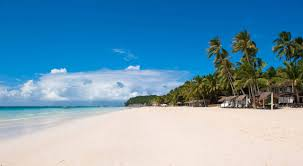

Boracay
Boracay is one of the most famous tourist destinations in the Philippines and is known for having crystal clear waters and very fine white sand.

Kawasan Falls
Kawasan Falls is known for its beautiful glistening waters which come from the Kabukulan Spring.

Kayangan Lake
Kayangan Lake is another body of water with crystal-clear waters and is said to have the cleanest lake in all of the Philippines